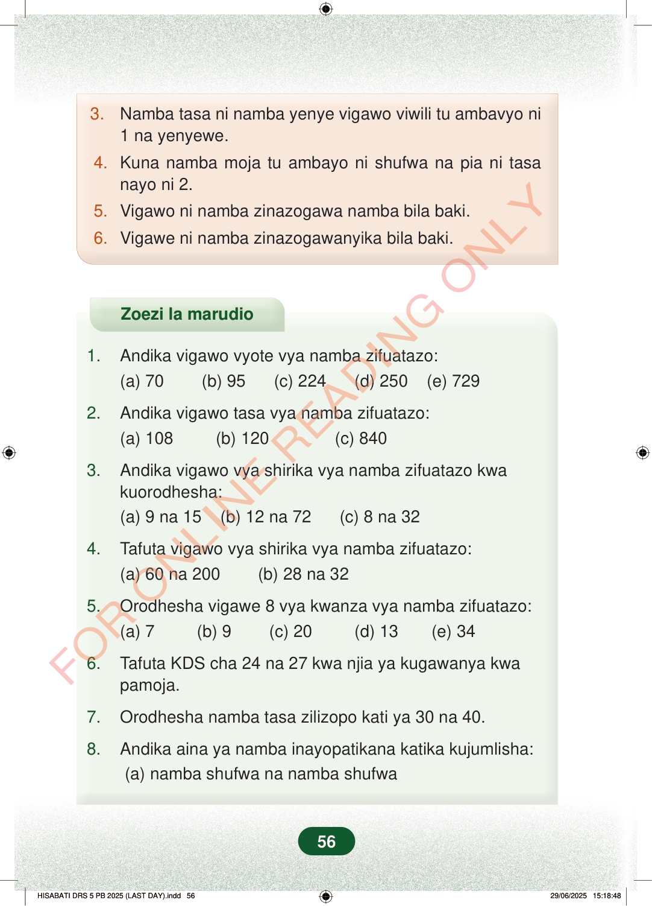

3.Namba tasa ni namba yenye vigawo viwili tu ambavyo ni1 na yenyewe.4.Kuna namba moja tu ambayo ni shufwa na pia ni tasanayo ni 2.5.Vigawo ni namba zinazogawa namba bila baki.6.Vigawe ni namba zinazogawanyika bila baki.Zoezi la marudio1.Andika vigawo vyote vya namba zifuatazo:(a) 70 (b) 95 (c) 224 (d) 250 (e) 7292.Andika vigawo tasa vya namba zifuatazo:(a) 108 (b) 120 (c) 8403.Andika vigawo vya shirika vya namba zifuatazo kwakuorodhesha:(a) 9 na 15 (b) 12 na 72 (c) 8 na 324.Tafuta vigawo vya shirika vya namba zifuatazo:(a) 60 na 200 (b) 28 na 325.Orodhesha vigawe 8 vya kwanza vya namba zifuatazo:(a) 7 (b) 9 (c) 20 (d) 13 (e) 346.Tafuta KDS cha 24 na 27 kwa njia ya kugawanya kwapamoja.7.Orodhesha namba tasa zilizopo kati ya 30 na 40.8.Andika aina ya namba inayopatikana katika kujumlisha:(a) namba shufwa na namba shufwa56
3. Namba tasa ni namba yenye vigawo viwili tu ambavyo ni 1 na yenyewe.
4. Kuna namba moja tu ambayo ni shufwa na pia ni tasa nayo ni 2.
5. Vigawo ni namba zinazogawa namba bila baki.
6. Vigawe ni namba zinazogawanyika bila baki.
Zoezi la marudio
1. Andika vigawo vyote vya namba zifuatazo: (a) 70 (b) 95 (c) 224 (d) 250 (e) 729
2. Andika vigawo tasa vya namba zifuatazo: (a) 108 (b) 120 (c) 840
3. Andika vigawo vya shirika vya namba zifuatazo kwa kuorodhesha: (a) 9 na 15 (b) 12 na 72 (c) 8 na 32
4. Tafuta vigawo vya shirika vya namba zifuatazo: (a) 60 na 200 (b) 28 na 32
5. Orodhesha vigawe 8 vya kwanza vya namba zifuatazo: (a) 7 (b) 9 (c) 20 (d) 13 (e) 34
6. Tafuta KDS cha 24 na 27 kwa njia ya kugawanya kwa pamoja.
7. Orodhesha namba tasa zilizopo kati ya 30 na 40.
8. Andika aina ya namba inayopatikana katika kujumlisha: (a) namba shufwa na namba shufwa
56
3. Namba tasa ni namba yenye vigawo viwili tu ambavyo ni 1 na yenyewe.4. Kuna namba moja tu ambayo ni shufwa na pia ni tasa nayo ni 2.5. Vigawo ni namba zinazogawa namba bila baki.6. Vigawe ni namba zinazogawanyika bila baki.Zoezi la marudio1.Andika vigawo vyote vya namba zifuatazo:(a) 70(b) 95(c) 224(d) 250(e) 7292.Andika vigawo tasa vya namba zifuatazo:(a) 108(b) 120(c) 8403.Andika vigawo vya shirika vya namba zifuatazo kwa kuorodhesha:(a) 9 na 15(b) 12 na 72(c) 8 na 324.Tafuta vigawo vya shirika vya namba zifuatazo:(a) 60 na 200(b) 28 na 325.Orodhesha vigawe 8 vya kwanza vya namba zifuatazo:(a) 7(b) 9(c) 20(d) 13(e) 346.Tafuta KDS cha 24 na 27 kwa njia ya kugawanya kwa pamoja.7.Orodhesha namba tasa zilizopo kati ya 30 na 40.8.Andika aina ya namba inayopatikana katika kujumlisha:(a) namba shufwa na namba shufwa(b) namba witiri na namba shufwa(c) namba witiri na namba witiri9.Tafuta KKS cha jozi za namba zifuatazo:(a) (8, 12)(b) (6, 18)(c) (14, 28)(d) (15, 30)10.Andika KDS cha jozi za namba zifuatazo:(a) ( 2, 3)(b) (4, 6)(c) ( 7, 4)(d) (5, 7)11.Chora chati ya namba 1 hadi 100 na itumie kuandika vigawe vitano vya kwanza vya namba zifuatazo:(a) 11(b) 29(c) 3312.(a) Andika namba shufwa zilizopo kati ya 70 na 83.(b) Andika namba tasa zilizopo kati ya 50 na 99.(c) Andika namba witiri zilizopo kati ya 85 na 100.